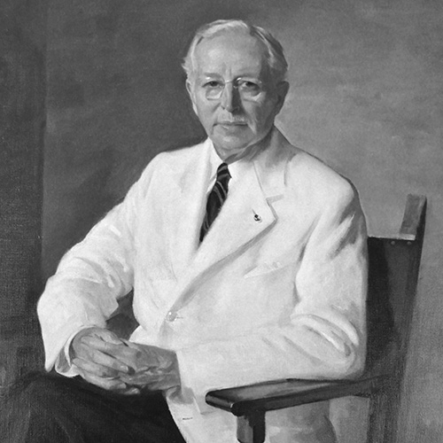

History
Karl St. John Hoblitzelle was born in St. Louis in 1879. While serving as an event manager
at the St.Louis World Fair in his early 20s, Karl Hoblitzelle met performers and concession
operators who indicated the south, in particular Texas, lacked venues to showcase their work and talent.
Upon the fair’s closing
in 1903, Karl Hoblitzelle came to Dallas, Texas with $2,500 and began to build a chain of vaudeville
theaters.
At its peak, Interstate Theater Company held 160 theaters across Texas and the Southeast. These theaters were
soon transformed into movie houses, and the success of this entertainment business created financial resources
which he invested in the growing oil and gas, real estate, and banking industries in Texas.
Karl Hoblitzelle married Esther Thomas in 1920, a Broadway starlet who had performed under the name of “Esther Walker”
and come to Dallas to perform at one of the theaters. Both were active in the social, civic, and cultural
activities of Dallas, and did not have any descendants.
Prudent management of their financial assets resulted in the accumulation of significant wealth, which upon the death
of Mrs. Hoblitzelle in 1943 and Mr. Hoblitzelle in 1967, became the corpus of Hoblitzelle Foundation.
For more information about the history of Karl Hoblitzelle, please refer to the book published by Paul W. Harris,
President and CEO from 1986-2017:
